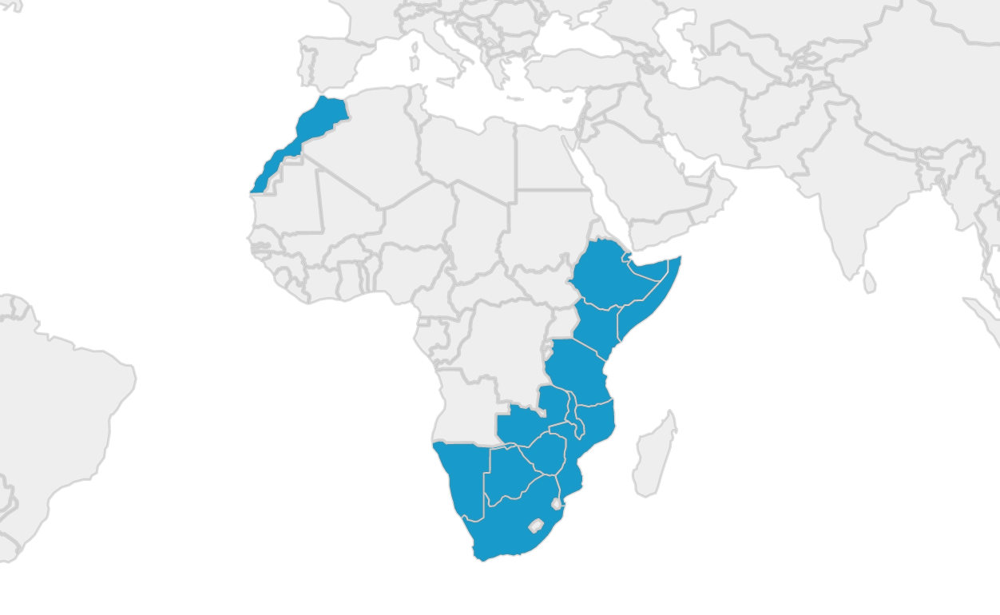
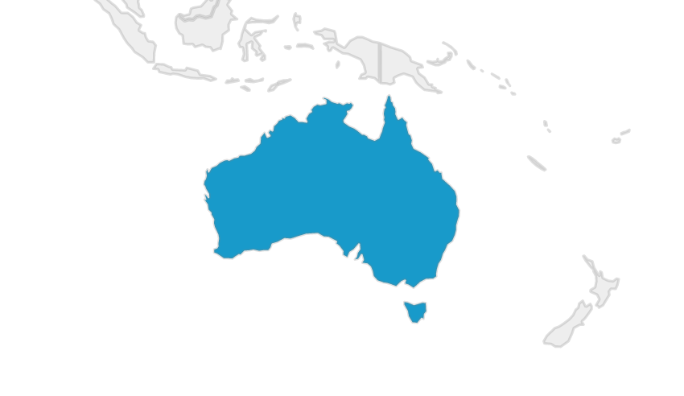

Education
Tertiary
The majority of my tertiary education has taken place at The University of Queensland, St Lucia campus, in Brisbane, Australia. I have completed short courses at Queensland University of Technology, and visited Harvard, MIT, and Boston University in the United States.
Graduate Certificate in Interaction Design
University of Queensland, 2020 - This degree explored methods for designing user interactions with technology. Most of the coursework was based around research methods for determining user needs and requirements, and how these could be incorporated into the design of new products, services, and technology systems.
Graduate Certificate in Higher Education
University of Queensland, 2015 - This degree explores the Scholarship of Teaching and Learning within the tertiary education sector. My graduate thesis explored ways to improve student engagement in online learning platforms. This culminated in the total redesign of the course "POLS2501: Human Rights and International Politics," a project case study wherein I evaluated learning outcomes from internal and external offerings of the same course.
Bachelor of Arts (Honours)
University of Queensland, 2011 - My first foray into the realm of international relations and political science. I completed an extended major in International Relations, with a minor in Peace and Conflict Studies, formalizing a passion for learning more about the world in which we live. My honours thesis investigated ways in which national political identity was invoked in constitutional interpretation when responding to non-violent, ideologically motivated extremism that attempted to undermine and subvert democracy and the rule of law. My specializations at the time extended to political subversion, free speech, and the conditions under which emergency laws could be enacted to suppress speech acts that acted counter to the "public good" - however that was defined.
Secondary
I completed my pre-tertiary education at a number of schools across Australia and Malaysia. As an expatriate student living in Kuala Lumpur, I had the opportunity to attend numerous International Schools, giving me exposure to the British, American, and Malaysian schooling curriculums.
Anglican Church Grammar School
Brisbane, Australia: 2004 to 2006 - I completed my highschool education here, after returning to Australia from Malaysia.
Mont Kiara International School
Kuala Lumpur, Malaysia: 2002-2004 - An American International School based in the leafy suburb of Mont Kiara. The school predominantly catered exclusively to international students, and incorporated the International Baccalaureate system to prepare students for American universities.
Brisbane Boys College
Brisbane, Australia: 2001-2002 - While my family moved throughout Southeast Asia, I attended boarding school alongside my older brother.
Austraian International School Malaysia
Kuala Lumpur, Malaysia: 2000-2001 - I was one of the first students at the Australian International School, and just about the only with an Australian background. Classes were smaller, and as such, my 6th grade class was combined with the the 7th and 8th grade student cohorts.
Employment
My career has taken me across the world, and has spanned fields as diverse as politics, education, scuba diving, and interaction design.
2020-Current
Academic Demonstrator, The University of Queensland
I have acted as a tutor and academic demonstrator in a number of courses taught under the Interaction Design degree. My work was focused on research methods and design thinking, and how these apply to the development of new technologies and systems.
Courses taught:
2017-2019
Advisor, The Office of the Hon. Kevin Rudd
My second stint working for the former Prime Minister of Australia, the Hon. Kevin Rudd. I worked as a political advisor under him, in his capacity as President of the Asia Society Policy Institute. As such, I largely moved between Brisbane and New York.
2016-2017
Divemaster, Scuba Junkie Borneo
I took a brief career break to work as a scuba divemaster on a remote island off the coast of Malaysian Borneo called "Palau Mabul". I'd been drawn to this island as it was immediately next to Sipadan, an island that had been subject to an international territorial dispute between Malaysia and Indonesia. Mabul was home to a community of Bajau Laut "Sea Nomads," who offered a unique insight into the lives of stateless people in the 21st century.
2015-2016
Executive Assistant, The Office of the Hon. Kevin Rudd
My first occasion working for the Hon. Kevin Rudd. Here I worked largely as a research assistant, policy analyst, and speechwriter as part of Mr Rudd's campaign for the United Nations Secretary General campaign.
2011-2017
Sessional Academic, The University of Queensland
Following the completion of my undergraduate degree, I was employed as a tutor and sessional academic across a number of international relations and foreign policy courses:
Travel
An avid traveller, I've now visited over 27 countries across 5 continents.
North America

The United States
For almost two years I lived in New York, the city that never sleeps. I lived here while I worked for the Hon. Kevin Rudd, 26th Prime Minister of Australia, in his capacity as President of the Asia Society Policy Institute. I took up residence first in Manhattan, before moving to South Williamsburg. Most of my time in the US was spent moving between New York and Washington, D.C.
Europe
I've lived, travelled, and worked in Europe on a few separate occasions over the last couple of years.

Italy
Based out of Lago di Como in the north of Italy, I lived here briefly with the Hon. Kevin Rudd as we finished writing his autobiography. He had started this project from the picturesque Bellagio. We set up shop in a villa in the historic commune of Blevio, in the restored Villa Calvi. During this time I travelled throughout the north, visiting Venice, Milan, Torno, Turino, and Verona.
I later returned to Italy in 2019, spending close to a month recovering and relaxing in Rome. During this time I visited the Vatican, practiced my Italian, and immersed myself in Southern Italian culture.
The United Kingdom
Between 2015 and 2017, London became my getaway from the hectic work life I had in New York. I'd periodically fly to the capital to take a break, refresh myself, and explore the highlights of British culture. I've not nearly spent enough time here. I was, however, lucky enough to encounter the Queen's escort on my first day in the country, as they transported the Crown Jewels in their heavily guarded entourage. Quite a sight.
Spain
Spain marked the conclusion of my epic cross-continent adventure across Africa. I spent just a few short days in Barcelona, hemorrhaging what remained of my travel budget on expensive Spanish cuisine and tourist traps. The country is beautiful, the food is incredible, and the people are nice. Spain deserves a much longer visit.
Africa
Crossing Africa. The adventure of a lifetime. I had just quit my job, exhausted after half a decade of politics, and on a whim bought myself a one-way ticket to South Africa. I had no plans, no contacts, no real agenda. Just a backpack, a camera, and a wad of US bills to exchange for local currencies along my way. With years of traveling and backpacking under my belt, I thought I was more than capable of handling what Africa had to offer. Little did I realise just how much of an adventure it would be.
South Africa
The start of my African overland adventure. I used this as a travel hub as I explored the surrounding countries.
Mozambique
Great cuisine, great people. I explored much of the eastern coast, from Maputo up to the northern end of the Bazaruto Archipelago. At the time, the northern part of the country was undergoing an ISIS incursion, and was not safe to visit.
Botswana
Fascinating country with an amazing history. Considered one of the safest places in Africa today. I explored much of the country by truck, camped in the desert, and visited many of the major game reserves. Lots and lots of elephants.
Namibia
The landscape of Namibia is unlike any other on this planet. Dry and arid, it is amazing that wildlife can survive under such harsh conditions. I explored the endless sand dunes, reached the Skeleton Coast to the west, and visited the famous Etosha reserve in the north.
Zambia
Zambia strikes an incredible contrast against the arid landscape of Namibia - here there is lush forest and vegetation everywhere, more rain falls, and wildlife is more abundant. Lusaka offers the launching point for the Tazara train, a three day journey that takes you to Dar es Salam in Tanzania.
Tanzania
Words cannot describe the beauty of Zanzibar, the island paradise off the coast. Sand like fine powder, food unlike anywhere else in the world, and scuba diving that is amongst the best you can experience. Mainland Tanzania is equally stunning, with Mount Kilimanjaro providing one of the continent's most breathtaking spectacles.
Malawi
I visited Malawi at a time of great civil unrest, as riots broke out in capital cities across the country. Here I had my first freshwater diving experience, swimming with the unique cichlids that inhabit Lake Malawi.
Kenya
Kenya too was undergoing more civil unrest during my visit, closing off the northern part of the country along the border with Ethiopia. I spent much of my time in Mombasa, learning about the histories of the Portuguese "coral" forts along the eastern coast of Africa.
Ethiopia
Addis Ababa is a stunning, metropolitan city that has evolved without the same Western influences that have influenced much of the rest of Africa. The only country on the continent to have never been colonized, Ethiopia retains a unique language, calendar, and culture. The food here is incredible.
Djibouti
Hot. Very, very hot. And home to dozens of foreign military bases. While I was here, the country was embroiled in the Yemeni conflict just kilometres away.
Somalia
A crazy part of the world, but one of the friendliest people I encountered in Africa. We were able to enter Somaliland, the self-declared independent and autonomous region in the north of the country.
Morocco
Good food, friendly people. I'd intended to stay for a lot longer...but plans changed.
Asia

Malaysia
My home away from home. I went to middle and highschool here as an expat. I later lived in Penang as an English teacher, and on Mabul Island off the coast of Sabah as a Divemaster.
Indonesia
What was supposed to be a 48 hour stop over turned into a three week adventure. Climbing to the pinnacle of Kawah Ijen would be one of the highlights of my life.
Thailand
An easy getaway while I lived in Malaysia. I travelled here many times during my undergraduate degree.
Vietnam
I've also visited Vietnam on multiple occasions. I've covered the country from North to South. Hoi An will always have a soft spot in my heart.
Maldives
Incredible diving. Ridiculous beaches. A small but expensive paradise.
Singapore
Extremely clean. Far too organized. Not entirely my jam.
Australia
Home. My birthplace. The country I always return to. Paradise.
I was born in Melbourne, but I've lived most of my life in sunny Brisbane, Queensland. It's a great place to come back to - beaches are nearby, the weather is generally quite moderate, and the city isn't as busy or serious as some of the larger capitals down south. It's a place I will always call home.
Skills
I love to learn new things. Here are some of the skills I've picked up along the way:
- Woodworking
- Photography
- Scuba Diving
- Sewing / Tailoring